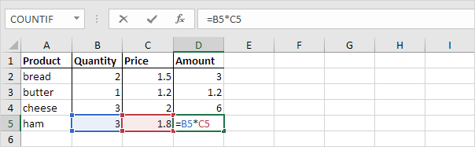
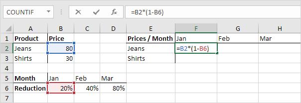

Referensi Sel
Referensi Relatif | Referensi Mutlak | Referensi Campuran
Referensi sel di Excel sangat penting. Pahami perbedaan antara referensi relatif, absolut, dan campuran, dan Anda sedang menuju kesuksesan.
Referensi Relatif
Secara default, Excel menggunakan referensi relatif. Lihat rumus di sel D2 di bawah ini. Referensi sel D2 (menunjuk ke) sel B2 dan sel C2. Kedua referensi itu relatif.
Pilih sel D2, klik di sudut kanan bawah sel D2 dan seret ke bawah ke sel D5.

Sel D3 mereferensikan sel B3 dan sel C3. Sel D4 mereferensikan sel B4 dan sel C4. Sel D5 mereferensikan sel B5 dan sel C5. Dengan kata lain: setiap sel mereferensikan dua tetangganya di sebelah kiri.
Referensi Mutlak
Lihat rumus di sel E3 di bawah ini.
Untuk membuat referensi absolut ke sel H3, letakkan simbol $ di depan huruf kolom dan nomor baris ($H$3) dalam rumus sel E3.

Sekarang kita dapat dengan cepat menyeret rumus ini ke sel lain.

Referensi ke sel H3 diperbaiki (saat kita menyeret rumus ke bawah dan ke seberang). Akibatnya, panjang dan lebar yang benar dalam inci dihitung. Kunjungi halaman kami tentang referensi absolut untuk mempelajari lebih lanjut tentang jenis referensi ini.
Referensi Campuran
Terkadang kita membutuhkan kombinasi referensi relatif dan absolut ( referensi campuran ).
Lihat rumus di sel F2 di bawah ini.

Kami ingin menyalin rumus ini ke sel lain dengan cepat. Seret sel F2 melintasi satu sel, dan lihat rumus di sel G2.

Apakah Anda melihat apa yang terjadi? Referensi ke harga harus menjadi referensi tetap ke kolom B. Solusi: letakkan simbol $ di depan huruf kolom ($B2) pada rumus sel F2. Dengan cara yang sama, ketika kita menyeret sel F2 ke bawah, referensi ke pengurangan harus menjadi referensi tetap ke baris 6. Solusi: letakkan simbol $ di depan nomor baris (B$6) dalam rumus sel F2.
Hasil:

Catatan: kami tidak menempatkan simbol $ di depan nomor baris $B2 (dengan cara ini kami mengizinkan referensi untuk berubah dari $B2 (Jeans) menjadi $B3 (Shirts) saat kami menyeret rumus ke bawah). Dengan cara yang sama, kita tidak menempatkan simbol $ di depan huruf kolom B$6 (dengan cara ini kita mengizinkan referensi berubah dari B$6 (Jan) ke C$6 (Feb) dan D$6 (Mar) ketika kami menyeret rumus ke seberang).
Sekarang kita dapat dengan cepat menyeret rumus ini ke sel lain.

Referensi ke kolom B dan baris 6 adalah tetap.